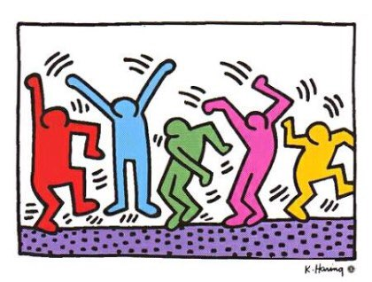

생애

낙서화를 새로운 예술 영역으로 끌어올린 팝아티스트.
키스 해링은 1958년 미국 펜실배니아 주 레딩(Reading)에서 1남 3녀 중 장남으로 태어나 쿠츠타운(Kutztown)에서 성장했다. 기술자이자 아마추어 만화가였던 아버지의 영향으로 어린 시절부터 예술에 흥미를 가졌고, 1976년 피츠버그의 아이비전문예술학교에 입학하여 그래픽 디자인을 공부했다. 그러나 상업 미술에 흥미를 지속하지 못한 그는 1978년 뉴욕으로 이사와 시각예술학교(School of Visual Art)에 입학했다.
키스 해링은 뉴욕 거리의 벽면과 지하철역에 그려진 낙서 스타일의 그림에 큰 영감을 받아 자신만의 독자적인 예술 세계를 펼쳐나갔다. 길거리, 지하철, 클럽 등의 벽면을 캔버스로 삼아 그림을 그리기 시작했고, 간결한 선과 강렬한 원색, 재치와 유머가 넘치는 그의 표현 기법은 뉴욕 길거리에 활기차고 생생한 분위기를 더해주었다. 점차 대중들의 관심을 얻게 되자 1981년 이란 출신의 미국 예술상 토니 샤프라치(Tony Shafrazi)의 갤러리에서 개인전을 열었다. 키스 해링은 이 전시회를 계기로 미국의 스타 작가로 급부상하게 되었으며 낙서 형식을 차용한 그의 독특한 회화 양식은 미국의 팝 아트(Pop Art)에 새로운 바람을 불어넣었다.
그 후 키스 해링은 보르도(Bordeaux) 현대 미술관에 작품 전시회를 열고 파리 비엔날레에 참가하는 등 왕성한 작품 활동을 이어나갔다. 1986년 그는 소호(SoHo)에 팝 가게(Pop Shop)를 열고 자신의 예술품들을 티셔츠, 장난감, 포스터 등으로 상품화하여 판매했다. 팝 가게의 개점과 함께 그의 작품들은 더욱 더 에이즈(AIDS) 인식, 코카인 전염병 등과 같은 사회-정치적인 주제들을 반영하기 시작했다. 키스 해링은 어렵고 까다로운 사회적 이슈들을 그림에 밝고 생동감 넘치게 표현하여 대중들과의 소통을 꾀했다. 그들이 재치와 유머 넘치는 예술을 통해 현대사회의 각종 문제점과 갈등에 관심을 갖길 바랐던 것이다.
1988년 에이즈 진단을 받았으며, 1989년에 키스 해링 재단을 설립하여 에이즈단체와 어린이 프로그램을 지원하고 에이즈에 대한 경각심을 일깨우는 데에 힘썼다. 같은 해 6월에 피사 Sant'Antonio의 교회의 후면 벽에 마지막 작품인 토투몬도(Tuttomondo) 벽화를 그렸다.
1990년 2월 16일 키스 해링은 뉴욕에서 만 서른 한 살이라는 젊은 나이에 에이즈로 인한 합병증으로 사망하였다.